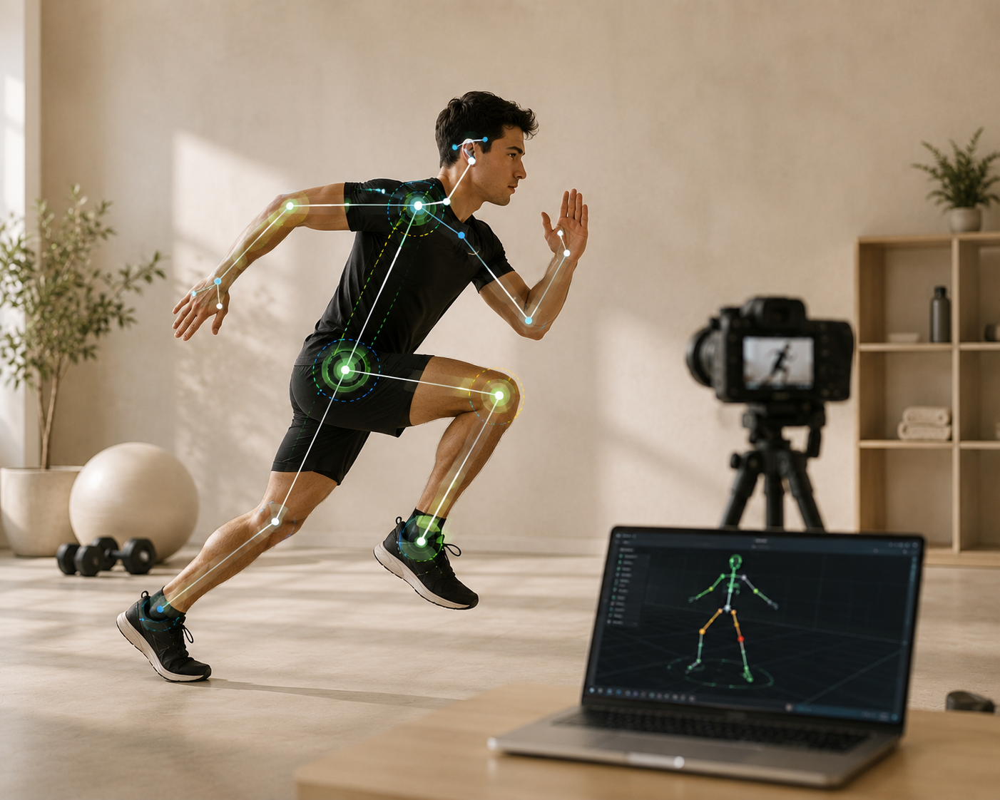

MeetMind
Streamlining meeting workflows with AI-generated summaries, task extraction, and collaborative insights — all in one platform.
FastAPI
LangGraph
AI
I am Debabrata Dey, a backend engineer specialising in AI, automation, and cloud-native systems. I build reliable software products that are clean, fast, and built to last.

Real-time athlete motion analysis with pose estimation, biomechanics, and AI injury risk assessment.

A high-performance distributed caching layer with Redis and consistent hashing for scalable backend systems.